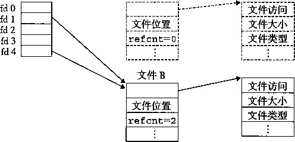
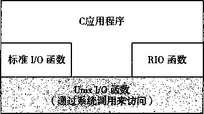
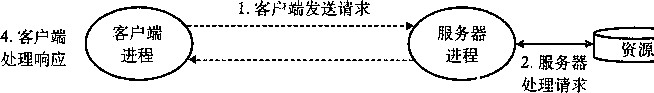
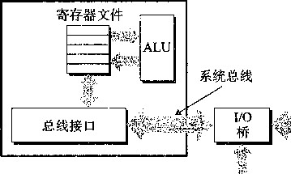
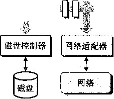
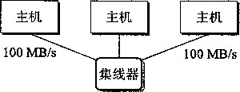
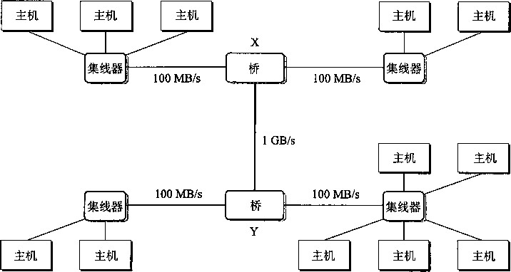
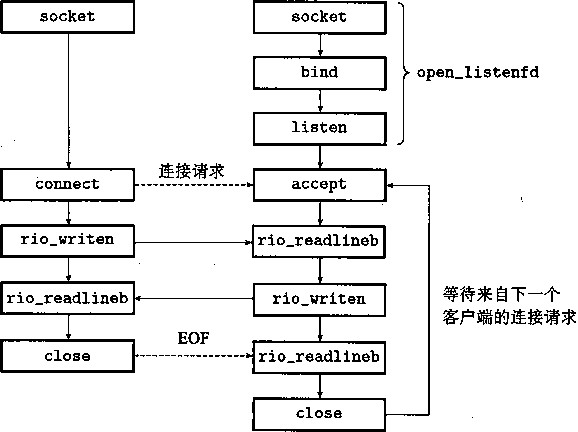

练习题10_2假设磁盘文件foobar.txt由6个ASCII码字符“foobar”组成。那么，下列程序的 输出是什么？
#include "csapp.h"
2
int mainO
{
int fdl, fd2;
char c;
,
fdl = Open("foobar.txt", 0_RD0NLY, 0);
fd2 = OpenC'foobar.txt", O.RDONLY, 0);
Read(fdl, &c, 1);
n Read(fd2, &c, 1);
printf("c = %c\n", c);
!3 exit(0);
®练习题10.3就像前面那样，假设磁盘文件foobar.txt由6个ASCII码字符“foobar”组成。那 么下列程序的输出是什么？
#include "csapp.h" int malaO {
O.RDONLY, 0);
int fd; char c;
fd = 0penCfoobar.txt" 3 if (ForkO == 0) { Read(fd, &c, 1); exit(0);
>
Wait(NULL);
Read(fd, &c, 1); printf("c = %c\n", c); exit(0);
I/O 重定向
Unix外壳提供了 I/O 重定向 操作符 ， 允许用户将磁盘文件和标准输入输出联起来。例如，键入
unix> Is > foo.txt
使得外壳加载和执行IS程序，将标准输出重定向到磁盘文件foo.txt。就如我们将在11.5节 中看到的那样，当一个Web服务器代表客户端运行CGI程序时，它就执行一种相似类型的重定 向。那么I/O重定向是如何工作的呢？ 一种方式是使用du P 2函数。
#include <unistd.h>
int dup2(int oldfd, int newfd)
返回：若成功则为非负的描述符，若出错则为一 1 。
dup2函数拷贝描述符表表项oldfd到描述符表表项newfd,覆盖描述符表表项newfd以 前的内容。 t 如果newfd已经打开了，dup2会在拷贝oldfd之前关闭newfd。
假设在调用dup2(4,l)之前，我们的状态如图10-11所示，其中描述符1 (标准输出）对 应于文件A (比如一个终端)，描述符4对应于文件B (比如一个磁盘文件)。A和B的引用计数 都等于1。图10-14显示了调用du P 2 (4,1)之后的情况。两个描述符现在都指向文件B ;文件 A已经被关闭了，并且它的文件表和v-node表表项也已经被删除了 ；文件B的引用计数已经增 加了。从此以后，任何写到标准输出的数据都被重定向到文件B。
描述符表 打开文件表 v-node表
(每个进程一张表） （所有进程共享) (所有进程共享)
文件A

图10-14通驾调用dup2 (4,1)重定向标准输出之后的内核数据结构。初始状态如图10-11所示 左边和右边的 hoinkies
为了避免和其他括号类型操作符，比如“]”和“[”相混淆 ， 我们总是将外壳的“>”操作 符称为“右hoinky”，而将 “<” 操作符称为“左hoinky”。
®练习题10_4如何用du P 2将标准输入重定向到描述符5 ?
练习题10.5假设磁盘文件foobar.txt由6个ASCII码字符“foobar”组成，那么下列程序的输 出是什么？
! #include "csapp.h"
2
int mainO
{
int fdl, fd2;
char c;
'
fdl = OpenC'foobar.txt", CLRDONLY, 0);
fd2 = OpenC'foobar.txt", 0_RD0NLY, 0);
Read(fd2, &c, 1);
Dup2(fd2, fdl);
Read(fdl, &c, 1);
printf("c = %c\n" , c) ;
exit(0);
>
标准 I/O
级别的替代。这个库(libc)提供了打开和关闭文件的函数（fopen和fclose)、读和写字节 的函数（fread和fwrite)、读和写字符串的函数（fgets和fputs),以及复杂的格式化的 I/O 函数（scanf 和 printf )。
•标准I/O库将一个打开的文件模型化为一 个流。 对于程序员而言，一个流就是一个指向 FILE类型的结构的指针。每个ANSI C程序开始时都有三个打开的流stdin、stdout和 stderr,分别对应于标准输入、标准输出和标准错误：
#include <stdio.h>
extern FILE *stdin; /* Standard input (descriptor 0) 伞 /
extern FILE * stdout ; /氺 Standard output (descriptor 1) */
extern FILE *stderr; /* Standard error (descriptor 2) */
类型为FILE的流是对文件描述符 和流缓冲区的 抽象。流缓冲区的目的和RIO读缓冲区的一 样：就是使开销较高的Unix I/O系统调用的数量尽可能的小。例如，假设我们有一个程序，它 反复调用标准I/O的getc函数，每次调用返回文件的下一个字符。当第一次调用getc时，库 通过调用一次read函数来填充流缓冲区，然后将缓冲区中的第一个字节返回给应用程序。只要 缓冲区中还有未读的字节，接下来对getc的调用就能直接从流缓冲区得到服务。
综合：我该使用哪些 I/O 函数
图10-15总结了我们在这一章里讨论过的各种I/O包。Unix I/O是在操作系统内核中实现的。 应用程序可以通过open、close、lseek、read、write和stat这样的函数来访问Unix I/O。 较高级别的RIO和标准I/O函数都是基于（使用）Unix I/O函数来实现的。RIO函数是专为本书 开发的read和write的健壮的包装函数。它们自动处理不足值，并且为读文本行提供一种高 效的带缓冲的方法。标准I/O函数提供了 Unix I/O函数的一个更加完整的带缓冲的替代品，包括 格式化的I/O例程。
fdopen
fwrite
fprintf
sprintf
fputs
fseek
n d n n s s S e a a a tuo p e c c e 11 o r s sgf c

图10-15 Unix I/O、标准I/O和RIO之间的关系
rio |
_readn |
rio" |
■writen |
rio" |
readinitb |
rio' |
readlineb |
rio" |
•readnb |
open read write lseek stat close
那么，在你的程序中该使用这些函数中的哪一个昵？标准I/O函数是磁盘和终端设备I/O之 选。大多数C程序员在他们的职业生涯中只使用标准I/O,而从不涉及低级Unix I/O函数。只要 可能，我们推荐你也这样做。
不幸的是，当我们试图对网络输入输出使用标准I/O时，它却带来了一些令人讨厌的问题。 就像我们将在11.4节中看到的那样，Unix对网络的抽象是一种称为 套接字 的文件类型。和任何 Unix文件一样，套接字也是用文件描述符来引用的，在这种情况下称为套 接字描 述符。应用进 程通过读写套接字描述符来与运行在其他计算机上的进程通信。
标准I/O流，从某种意义上而言 是全双 工的，因为程序能够在同一个流上执行输入和输出。
然而，对流的限制和对套接字的限制，有时候会互相冲突，而又极少有文档描述这些现象：
•限制一：跟在输出函数之后的输入函数。如果中间没有插入对fflush、fseek、fsetpos 或者rewind的调用,一个输入函数不能跟随在一个输出函数之后。fflush函数清空与流
. 相关的缓冲区。后三个函数使用Unix I/O lseek函数来重置当前的文件位置。 •
•限制二：跟在输入函数之后的输出轟数。如果中间没有插入对fseek、fsetpos或者 rewind的调用，一个输出函数不能跟随在一个输入函数之后,除非该输入函数遇到了一 个 EOF。
这些限制给网络应用带来了一个问题，因为对套接字使用lseek函数是非法的。对流I/O 的第一个限制能够通过釆用在每个输入操作前刷新缓冲区这样的规则来满足。然而，要满足 第二个限制的唯一办法是，对同一个打开的套接字描述符打开两个流，一个用来读，一个用 来写：
FILE *fpin, *fpout;
fpin = fdopen(sockfd, "r");
fpout = fdopen(sockfd, "w");
但是这种方法也有问题，因为它要求应用程序在两个流上都要调用fclose，这样才能释放 与每个流相关联的存储器资源，避免存储器泄漏 ：
fclose(fpin);
fclose(fpout); .
这些操作中的每一个都试图关闭同一个底层的套接字描述符，所以第二个close操作就会 失败。对顺序的程序来说，这并不是问题，但是在一个线程化的程序中关闭一个已经关闭了的描 述符是会导致灾难的（见12.7.4节)。
因此，我们建议你在网络套接字上不要使用标准I/O函数来进行输入和输出。而要使用健壮 的RIO函数。如果你需要格式化的输出，使用sprintf函数在存储器中格式化一个字符串，然 后用rio_writen把它发送到套接口。如果你需要格式化输入，使用rio—readlineb来读一 个完整的5本行，然后用sscanf从文本行提取不同的字段。
10.10 小结
Unix提供了少量的系统级函数，它们允许应用程序打开、关闭、读和写文件，提取文件的 元数据，以及执行I/O重定向。Unix的读和写操作会出现不足值，应用程序必须能正确地预计 和处理这种情况。应用程序不应直接调用Unix I/O函数，而应该使用RI0包，RI0包通过反复 执行读写操作，直到传送完所有的请求数据，自动处理不足值。
Unix内核使用三个相关的数据结构来表示打开的文件。描述符表中的表项指向打开文件表 中的表项，而打开文件表中的表项又指向v-node表中的表项。每个进程都有它自己单独的描述 符表，而所有的进程共享同一个打开文件表和v-node表。理解这些结构的一般组成就能使我们 清楚地理解文件共享和I/O重定向。
标准I/O库是基于Unix I/O实现的，并提供了一组强大的高级I/O例程。对于大多数应用程 序而言，标准I/O更简单，是优于Unix I/O的选择。然而，因为对标准I/O和网络文件的一些相 互不兼容的限制，Unix I/O比标准I/O更适用于网络应用程序。
参考文献说明
Stevens编写了 Unix I/O的标准参考文献[110]。Kemighan和Ritchie对于标准I/O函数给出 了清晰而完整的讨论[58]。
家庭作业
*10.6下面程序的输出是什么？
1 #include "csapp.h"
|
2 3 A |
int mainO j |
|
|
4 5 |
\ int fdl, fd2; |
|
|
6 7 |
fdl = OpenC'foo.txt", 0—RD0NLY, 0); |
|
|
8 |
fd2 = Open ("bar .txt 11 , 0_RD0NLY, |
0); |
|
9 |
Close(fd2); |
|
|
10 |
fd2 = Open("baz.txt", CLRDONLY, |
0 )； |
|
11 |
printf("fd2 = %d\n", fd2); |
|
|
12 |
exit(0); |
|
|
13 |
} |
|
*10.7修改图10-4中所示的cpfile程序，使得它用RIO函数从标准输入拷贝到标准输出，一次MAXBUF 个字节。
**10.8编写图10-10中的statcheck程序的一个版本，叫做fstatcheck,它从命令行上取得一个描述 符数字而不是文件名。
**10.9考虑下面对家庭作业题10.8中的fstatcheck程序的调用：
unix> fstatcheck 3 < foo.txt
你可能会预想这个对fstatcheck的调用将提取和显示文件foo• txt的元数据。然而，当我们 在系统上运行它时，它将失败，返回“坏的文件描述符”。根据这种情况，填写出外壳在fork和 execve调用之间必须执行的伪代码：
if (ForkO == 0) i /* Child */
/* What code is the shell executing right here? */
Execve("fstatcheck", argv, envp);
}
**10.10修改图10-4中的cpfile程序，使得它有一个可选的命令行参数infile。如果给定了 infile，那 么拷贝infile到标准输出，否则像以前那样拷贝标准输入到标准输出。一个要求是对于两种情况， 你的解答都必须使用原来的拷贝循环（第9〜11行)。只允许你插入代码，而不允许更改任何巳经 存在的代码。
练习题答案
练习题10.1 Unix进程生命周期开始时，打开的描述符赋给了 stdin (描述符0)、stdout (描述符1) 和stderr (描述符2)。open函数总是返回最低的未打开的描述符，所以第一次调用open会返回描述符 3。调用close函数会释放描述符3。最后对open的调用会返回描述符3,因此程序的输出是“fd2=3”。 练习题10.2描述符fdl和fd2都有各自的打开文件表表项，所以每个描述符对于foobar.txt都有它 自己的文件位置。因此，从fd2的读操作会读取foobar.txt的第一个字节，并输出
而不是像你开始可能想的
练习题10.3回想一下，子进程会继承父进程的描述符表，以及所有进程共享的同一个打开文件表。因 此，描述符fd在父子进程中都指向同一个打开文件表表项。当子进程读取文件的第一个字节时，文件位置 加1。因此，父进程会读取第二个字节，而输出就是
练习题10.4重定向标准输入（描述符0)到描述符5,我们将调用du P 2(5,0>或者等价的dup2
(5,STDIN_FILENO> 0
练习题10.5第一眼你可能会想输出应该是
但是因为我们将fdl重定向到了 fd2,输出实际上是
Computer Systems ： A Programmer’s Perspective, 2E
网络编程
网络应用随处可见。任何时候你浏览Web、发送E-mail或者弹出一个X window,你就正在 使用一个网络应用程序。有趣的是，所有的网络应用都是基于相同的基本编程模型，有着相似的 整体逻辑结构，并且依赖相同的编程接口。
网络应用依赖于很多在系统研究中已经学习过的概念，例如，进程、信号、字节顺序、存储 器映射以及动态存储分配，都扮演着重要的角色。还有一些新概念要掌握。我们需要理解基本的 客户端-服务器编程模型，以及如何编写使用因特网提供的服务的客户端-服务器程序。最后， 我们将把所有这些概念结合起来，开发一个小的但功能齐全的Web服务器，能够为真实的Web 浏览器提供静态和动态的文本和图形内容。
11.1 客户端-服务器编程模型
每个网络应用都是基 于客户端-服务器模 型的。釆用这个模型，一个应用是由一个 服务器 进程和一个或者多 个客户 端进程组成。服务器管理某种资源，并且通过操作这种资源来为它的客 户端提供某种服务。例如，一个Web服务器管理了一组磁盘文件，它会代表客户端进行检索和 执行。一个FTP服务器就管理了一组磁盘文件，它会为客户端进行存储和检索。相似地，一个 电子邮件服务器管理了一些文件，它为客户端进行读和更新。
客户端-服务器模型中的基本操作 是事务 （transaction)(见图11-1)。一个客户端-服务器 事务由四步组成：
当一个客户端需要服务时，它向服务器发送一个 请求， 发起一个 事务。 例如，当Web浏 览器需要一个文件时，它就发送一个请求给Web服务器。
服务器收到请求后，解释它，并以适当的方式操作它的资源。例如，当Web服务器收到 浏览器发出的请求后，它就读一个磁盘文件。
服务器给客户端发送一个响应，并等待下一个请求。例如,Web服务器将文件发送回客户端。
客户端收到响应并处理它。例如，当Web浏览器收到来自服务器的一页后，它就在屏幕 上显示此页。

3.服务器发送响应 -
图11-1 一个客户端-服务器事务
认识到客户端和服务器是进程，而不是常常提到的机器或者主机，这是很重要的。一台主机 可以同时运行许多不同的客户端和服务器，而且一个客户端和服务器的事务可以在同一台或是不 同的主机上运行。无论客户端和服务器是怎样映射到主机上的，客户端-服务器模型是相同的。
客户端-服务器事务和数据库事务
客户端 - 服务器事务不是数据库事务，没有数据库事务的任何特性，例如原子性。在我们 的上下文中，事务仅仅是客户端和服务器执行的一系列步骤。
11.2 网络
客户端和服务器通常运行在不同的主机上 ， 并且通 过计算机网络 的硬件和软件资源来通信。 网络是复杂的系统，在这里我们只想了解一点皮毛。我们的目标是从程序员的角度给你一个可工 作的思考模型。
对于一个主机而言，网络只是又一种I/O设备，作为数据源和数据接收方，如图11-2所示。 一个插到I/O总线扩展槽的适配器提供了到网络的物理接口。从网络上接收到的数据从适配器经 过I/O和存储器总线拷贝到存储器，典型地是通过DMA (译者注：直接存储器存取方式）传送。 相似地，数据也能从存储器拷贝到网络。
CPU 芯片

存储器总线
主存
扩展槽

图形适配器|
鼠标 键盘
监视器
图11-2 —个网络主机的硬件组成
物理上而言，网络是一个按照地理远近组成的层次系统。最低层是LAN (LocalArea Network,局域网），在一个建筑或者校园范围内。迄今为止，最流行的局域网技术是 以太网 (Ethernet),它是由施乐公司帕洛阿尔托研究中心（Xerox PARC)在20世纪70年代中期提出 的。以太网技术被证明是适应力极强的，从3MB/S演变到lOGB/s。
一个以太网段 （Ethernet segment)包括一些电缆（通常是双绞线）和一 个叫做 集线器的小盒 子，如图11-3所示。以太网段通常跨越一些小的区域，例如某建筑物的一个房间或者一个楼层。 每根电缆都有相同的最大位带宽，典型的是100MB/S或者lGB/s。一端连接到主机的适配器， 而另一端则连接到集线器的一个端口上。集线器不加分辨地将从一个端口上收到的每个位复制到 其他所有的端口上。因此，每台主机都能看到每 个位。

每个以太网适配器都有一个全球唯一的48位地址，它 存储在这个适配器的非易失性存储器上。一台主机可以发送 一段位，称为帧（frame),到这个网段内其他任何主机。每 个 帧包括一些固定数量 的头部 （header)位,用来标识此帧 的源和目的地址以及此破的长度,此后紧随的就是数据位的 有效载荷。 每个主机适配器都能看到这个帧，但是只有目的 主机实际读取它。
使用一些电缆和叫做网桥 （ bridge)的小盒子，多个以太网段可以连接成较大的局域网，称 为桥接以太网 （bridged Ethernet),如图11-4所示。桥接以太网能够跨越整个建筑物或者校区。 在一个桥接以太网里，一些电缆连接网桥与网桥，而另外一些连接网桥和集线器。这些电缆的带 宽可以是不同的。在我们的示例中，网桥与网桥之间的电缆有lGB/s的带宽，而四根网桥和集 线器之间电缆的带宽却是lOOMB/s。
A B

C
图11-4桥接以太网
网桥比集线器更充分地利用了电缆带宽。利用一种聪明的分配算法，它们随着时间自动学习 哪个主机可以通过哪 个端口 可达，然后只在有必要时，有选择地将帧 从一个端口拷 贝到另 一个端 口。例如，如果主机A发送一个帧到同网段上的主机B,当该帧到达网桥X的输入端口时，X 就将丢弃此帧，因而节省了其他网段上的带宽。然而，如果主机A发送一个帧到一个不同网段 上的主机C,那么网桥X只会把此帧拷贝到和网桥Y相连的端口 J：,网桥Y会只把此帧拷贝到 与主机C的网段连接的端口。
主机 主机 … 主机
图11-5局域网的概念视图
为了简化局域网的表示，我们将把集线器和网桥以及连 接它们的电缆画成一根水平线，如图11-5所示。
在层次的更高级别中，多个不兼容的局域网可以通过 叫做路由器 （router)的特殊计算机连接起来，组成一个 internet (互联网络)。
Internet internet
我们总是用小写字母的 internet 描述一般概念，而用大写字母的 Internet 来描述一种具体的 实现，也就是所谓的全球 IP 因特网。
每台路由器对于它所连接到的每个网络都有一个适配器（端口）。路由器也能连接高速点 到点电话连接，这是称为WAN (Wide-Area Network,广域网）的网络示例，之所以这么叫是 因为它们覆盖的地理范围比局域网的大。一般而言，路由器可以用来由各种局域阿和广域网构 建互联网络。例如，图11-6展示了一个互联网络的示例，3台路由器连接了一对局域网和一对 广域网。
主机
主机
主机
主机
主机
主机
zmmf：
LAN
LAN
路由器
路由器
‘ ■
路由器
图11-6 —个小型的互联网络。两个局域网和两个广域网甩三台路由器连接起来
互联网络至关重要的特性是，它能由釆用完全不同和不兼容技术的各种局域网和广域网组 成。每台主机和其他每台主机都是物理相连的，但是如何能够让某台源主机跨过所有这些不兼容 的网络发送数据位到另一台 目的主机呢？
解决办法是一层运行在每台主机和路由器上的协 议软件 ， 它消除了不同网络之间的差异。这 个软件实现一 种协议 ， 这种协议控制主机和路由器如何协同工作来实现数据传输。这种协议必须 提供两种基本能力：
• 命名机制。 不同的局域网技术有不同和不兼容的方式来为主机分配地址。互联网络协议通 过定义一种一致的主机地址格式消除了这些差异。每台主机会被分配至少一个这种互联网 络地址 （internetaddress),这个地址唯一地标识了这台主机。
•传送机制。在电缆上编码位和将这些位封装成帧方面，不同的联网技术有不同的和不兼容 的方式。互联网络协议通过定义一种把数据位捆扎成不连续的片（称为包）的统一方式， 从而消除了这些差异。一个包是由包 头和有效载荷 组成的，其中包头包括包的大小以及源 主机和目的主机的地址，有效载荷包括从源主机发出的数据位。
图11-7展示了一个主机和路由器如何使用互联网络协议在不兼容的局域网间传送数据的示 例。这个互联网络示例由两个局域网通过一台路由器连接 而成。 一个客产端运行在主机A上， 主机A与LAN1相连，它发送了一串数据字节到运行在主机B上的服务器端，主机B则连接在 LAN2上。这个过程包括8个基本步骤：
运行在主机A上的客户端进行了一个系统调用，从客户端的虚拟地址空间拷贝数据到内 核缓冲区中。
主机A上的协议软件通过在数据前附加互联网络包头和LAN1帧头,创建了一个LAN1 的帧。互联网络包头寻址到互联网络主机B。LAN1帧头寻址到路由器。然后它传送此帧到适配 器。注意，LAN1帧的有效载荷是一个互联网络包，而互联网络包的有效载荷是实际的用户数据。 这种 封装是 基本的网络互联方法之一。
LAN1适配器拷贝该帧到网络上。
当此帧到达路由器时，路由器的LAN1适配器从电缆上读取它，并把它传送到协议 软件。
路由器从互联网络包头中提取出目的互联阿络地址，并用它作为路由表的索弓丨，确定向 哪里转发这个包，在本例中是LAN2。路由器剥落旧的LAN1的帧头，加上寻址到主机B的新 的LAN2帧头，并把得到的帧传送到适配器。
路由器的LAN2适配器拷贝该帧到网络上。
当此帧到达主机B时，它的适配器从电缆上读到此帧，并将它传送到协议软件。
最后，主机B上的协议软件剥落包头和帧头。当服务器进行一个读取这些数据的系统调 用时，协议软件最终将得到的数据拷贝到服务器的虚拟地址空间。
主机A 客户端
主机B 服务端
(1) 数据
(8)| 数据
互联网络
协议软件
协议软件
(2)
(7) 数据
数据
LAN1
适配器
LAN2
适配器
LAN1 帧
路由器
(6) | 数据 | PH |FH2l
(3) I 数据 |PH
LAN1
适配器
LAN2
适配器
LAN2 帧
LAN1
LAN2
(4)1 数据 |PH [fHI
数据 | PH 1fH2] (5)
协议软件
图 11-7 在互联网络上，数据是如何从一台主机传送到另一台主机的。关键词： PH ：互联网络包头； FHI ： LAN1 的帧头 ; FH2 ： LAN2 的帧头
当然，在这里我们掩盖了许多很难的问题。如果不同的网络有不同帧大小的最大值，该怎么办 呢？路由器如何知道该往哪里转发帧呢？当网络拓扑变化时，如何通知路由器？如果一个包丢失 了又会如何呢？虽然如此，我们的示例抓住了互联网络思想的精髓，封装是关键。
11.3 全球 IP 因特网
全球IP因特网是最著名和最成功的互联网络实现。从1969年起，它就以这样或那样的形式 存在了。虽然因特网的内部体系结构复杂而且不断变化，但是自从20世纪80年代早期以来，客 户端-服务器应用的组织就一直保持相当的稳定。图11-8展示了一个因特网客户端-服务器应 用程序的基本硬件和软件组织。每台因特两主机都运行实现TCP/IP协议（Transmission Control Protocol/Internet Protocol,传输控制协议/互联网络协议）的软件，几乎每个现代计算机系统都 支持这个协议。因特网的客户端和服务器混合使用套接字接口函数和Unix I/O函数来进行通信 (我们将在11.4节中介绍套接字接口）。套接字函数典型地是作为会陷入内核的系统调用来实现 的，并调用各种内核模式的TCP/IP函数。
互联网络客户端主机
用户代码
互联网络服务器主机
服务器
客户端
系统连接口
TCP/IP
内核代码
TCP/IP
硬件接口（中断）
网络适配器
网络适配器
图11-8 —个因特网应用程序的硬件和软件组织
TCP/IP实际上是一个协议族，其中每一个都提供不同的功能。例如，IP协议提供基本的 命名方法和递送机制，这种递送机制能够从一台因特网主机往其他主机发送包，也叫做 数据报 (datagram)。IP机制从某种意义上而言是不可靠的，因为，如果数据报在网络中丢失或者重复, 它并不会试图恢复。UDP(Unrdiable Datagram Protocol,不可靠数据报协议）稍微扩展了 IP协议, 这样一来，包可以在进程间而不是在主机间传送。TCP是一个构建在IP之上的复杂协议，提供 了进程间可靠的全双工（双向的）连接。为了简化讨论，我们将TCP/IP看做是一个单独的整体 协议。我们将不讨论它的内部工作，只讨论TCP和IP为应用程序提供的某些基本功能。我们将 不讨论UDP 0
从程序员的角度，我们可以把因特网看做一个世界范围的主机集合，满足以下特性：
•主机集合被映射为一组32位的IP地址。
•这组IP地址被映射为一组称为 因特网域名 (Internet domain name)的标识符。
•因特网主机上的进程能够通 过连接 (connection)和任何其他因特网主机上的进程通信。
接下来的三节将更详细地讨论这些基本的因特网概念。
IP 地址
一个IP地址就是一个32位无符号整数。网络程序将IP地址存放在如图11-9所示的IP地址 结构中。
: ~ netinet/in.h
/* Internet address structure */ •
struct in_addr {
unsigned int s_addr; /* Network byte order (big-endiaii) */
}；
： netinet/in.h
图11-9 IP地址结构
为什么要用结构来存放标量IP地址？
把一个标量地址存放在结构中，是套接字接口早期实现的不幸产物。为 IP 地址定义一个标 量类型应该更有意义 ， 但是现在更改已经太迟了，因为已经有大量应用是基于此的了。
因为因特网主机可以有不同的主机字节顺序，TCP/IP为任意整数数据项定义了统一 的网络 字节顺序 （network byte order)(大端字节顺序），例如IP地址，它放在包头中跨过网络被携带。 在IP地址结构中存放的地址总是以（大端法）网络字节顺序存放的，即使主机字节顺序（host byte order)是小端法。Unix提供了下面这样的函数在网络和主机字节顺序间实现转换：
#include <netinet/in.h>
unsigned long int htonl(unsigned long int hostlong); unsigned short int htons(unsigned short int hostshort);
返回：按照网络字节顺序的值。
unsigned long int ntohl(unsigned long int netlong); unsigned short int ntohs(unsigned short int netshort);
返回：按照主机字节顺序的值。
htonl函数将32位整数由主机字节顺序转换为网络字节顺序。ntohl函数将32位整数从 网络字节顺序转换为主机字节。htons和ntohs函数为16位的整数执行相应的转换。
IP地址通常是以一种称为点 分十进制表示 法来表示的，这里，每个字节由它的十进制值表示，
并且用句点和其他字节间分开。例如，128.2.194.242就是地址0x8002c2f2的点分十进制表 示。在Linux系统上，你能够使用HOSTNAME命令来确定你自己主机的点分十进制地址：
linux> hostname -i
128.2.194.242
因特网程序使用inet_aton和inet一ntoa函数来实现IP地址和点分十进制串之间的转换：
#include <axpa/inet.h> |
||
int inet_aton(const char *cp, struct in_addr *inp); |
||
返回 |
：若成功则为 1, 若出错则为 0 。 |
|
char * inet_ntoa(struct in_addr in); |
||
返回： |
指向点分十进制字符串的指针。 |
inet_at 0 n函数将一个点分十进制串（cp)转换为一个网络字节顺序的IP地址（inp)。相 似地,inet一ntoa函数将一个网络字节顺序的IP地址转换为它所对应的点分十进制串。注意, 对inet一aton的调用传递的是指向结构的指针，而对inet_ntoa的调用传递的是结构本身。
ntoa和aton是什么意思？
“n”表示的是网络（network)。“a”表示应用（application)。而“to”表示转换。
®练习题11.1完成下表：
十六进制地址 |
点分十进制地址 |
0x0 |
|
Oxffffffff |
|
0x7f000001 |
|
205.188.160.121 |
|
64.12.149.13 |
|
205.188.146.23 |
自练习题 11.2 编写程序 he X 2dd.c, 它将十六进制参数转换为点分十进制串并打印出结果。例如
unix> ./hex2dd 0x8002c2f2
128.2.194.242
®练习题 11.3 编写程序 dd2hex.c, 它将它的点分十进制参数转换为十六进制数并打印出结果。例如
unix> ./dd2hex 128.2.194.242 0x8002c2f2
11.3.2因特网域名
因特阿客户端和服务器互相通信时使用的是IP地址。然而，对于人们而言，大整数是很难 记住的，所以因特网也定义了一组更加人性化 的域名 （domain name),以及一种将域名映射到 IP地址的机制。域名是一串用句点分隔的单词（字母、数字和破折号)，例如
kittyhawk.cmcl•cs. emu.edu
域名集合形成了一个层次结构，每个域名编码了它在这个层次中的位置。通过一个示例你将 很容易理解这点。图11-10展示了域名层次结构的一部分。层次结构可以表示为一棵树。树的节 点表示域名，反向到根的路径形成了域名。子树称 为子域 （subdomain)。层次结构中的第一层是 一个 未命名的根节点。 下一 层是一组一 级域名 (first-level domain name),由非赢利组织ICANN (Internet Corporation for Assigned Names and Numbers,因特网分配名字数字协会）定义。常见的 第一层域名包括com、edu> gov、org和net。
下一层是二级（second-level)域名，例如cmu.edu,这些域名是由ICANN的各个授权代 理按照先到先服务的基础分配的。一旦一个组织得到了一个二级域名，那么它就可以在这个子域 中创建任何新的域名了。
第一层域名 第二层域名 第三层域名
mil edu gov cc
/K
mit emu berkeley
八
208.216.181.15
cs ece
z\
cmcl
kittyhawk imperial
128.2.189.40
图11-10因特网域名层次结构的一部分
因特网定义了域名集合和IP地址集合之间的 映射。 直到1988年，这个映射都是通过一个叫 做 H0STS.TXT 的文本文件来手工维护的。从那以后，这个映射是通过分布世界范围内的数据库 (称为DNS (Domain Name System,域名系统））来维护的。从概念上而言，DNS数据库由上 百万的如图11-11所示的 主机条目结构 （host entry structure)组成的，其中每条定义了一组域名 (一个官方名字和一组别名）和一组IP地址之间的映射。从数学意义上讲，你可以认为每条主机 条目就是一个域名和IP地址的等价类。
/* DNS host entry structure */ struct hostent { char *h_name; char 11 h_aliases; int h_addrtype;
int h_length;
char **h_addr_list;
netdb.h
/ 12 Official domain name of. host */
/* Null-terminated array of domain names */ /* Host address type (AF 一 INET) */
/* Length of an address, in bytes */
/* Null-terminated array of in_a
#include <netdb.h>
struct hostent 13 gethostbyname(const char *name);
返回：若成功则为非 NULL 指针，若出错则为 NULL 指针，同时设置匕 _ 63：1：110。 struct hostent *gethostbyaddr(const char *addr, int len, 0);
返回：若成功则为非 NULL, 若出错则为 NULL 指针，同时设置匕 _ 6二110。
gethostbyname函数返回和域名name相关的主机条目。gethostbyaddr函数返回和 IP地址addr相关联的主机条目。第二个参数给出了一个IP地址的字节长度，对于目前的因特 网而言总是四个字节。对于我们的要求来说，第三个参数总是零。
code/netp/hostinfo.c
#include "csapp.h"
int main(int argc, char 14 argv)
{
char **pp;
struct in_addr addr; struct hostent *hostp;
if (argc != 2) {
fprintf(stderr, "usage: %s <domain name or dotted-decimal>\n", argv[0]);
exit(0);
}
if (inet_aton(argv[l], feaddr) != 0)
hostp = Gethostbyaddr((const char *)feaddr, sizeof(addr), AF_INET);
else
hostp 二 Gethostbyname (argv [1]);
printf("official hostname: %s\n", hostp->h_name);
for (pp = hostp->h_aliases; *pp !- NULL; pp++) printf("alias: %s\n", *pp);
for (pp = hostp->h_addr_list ; *pp != NULL; pp++) { addr.s_addr = ((struct in_addr *)*pp)->s_addr; printf("address: %s\n", inet_ntoa(addr));
exit(0);
localhost名字为引用运行在同一台机器上的客户端和服务器提供了一种便利和可移植的 方式，这对调试相当有用。我们可以使用HOSTNAME来确定本地主机的实际域名 ：
皿 ix> hostname
bluef ish.ics.cs. emu.edu
在最简单的情况下， 一 个域名和一个 IP 地址之间是 一一 映射的 ：
unix> ./hostinfo bluefish.ics.cs.emu.edu official hostname: bluefisli.ics.cs.emu.edu alias: bluefish.alias.cs.cmu.edu address: 128.2.205.216
然而，在某些情况下 ， 多个域名可以映射为同一个IP地址：
unix> . /hostinfo cs.mit.edu official hostname: eecs.mit.edu alias: cs.mit.edu address: 18.62.1.6
在最通常的情况下，多个域名可以映射到多个IP地址：
皿 ix> ./hostinfo google.com
official hostname: google. com •
address: 74.125.45.100 address: 74.125.67.100 address: 74.125.127.100
最后，我们注意到某些合法的域名没有映射到任何IP地址：
unix> ./hostinfo edu
Gethostbyname error: No address associated with name 皿 ix> ./hostinfo cmcl .cs . emu . edu
Gethostbyname error: No address associated with name
有多少因特网主机？
因特网软件协会（Internet Software Consortium, www.isc.org)自从1987年以后 ， 辛年进行两 次因特网域名调查。这个调查通过计算已经分配给一个域名的IP地址的数量来估因特网主机 的数量 ， 展示了一种令人吃惊的趋势。自从1987年以来 ， 当时一共大约有20 000台因特网主机 ， 每年主机数量都大概会翻一番。到2009年6月，全球已经有大约700000000台因特网主机了。
_练习题11.4编译图11-12中的HOSTINFO程序。然后在你的系统上连续运行hostinfo google.com三次。 A•在三个主机条目的IP地址顺序中，你注意到了什么？
这种顺序有何作用？
因特网连接
因特网客户端和服务器通过在连接上发送和接收字节流来通信。从连接一对进程的意义上而 言，连接是点对点的。从数据可以同时双向流动的角度来说，它是全双工的。并且从（除了一些 如粗心的耕锄机操作员切断了电缆引起灾难性的失败以外）由源进程发出的字节流最终被目的进 程以它发出的顺序收到它的角度来说，它也是可靠的。
一个套接字是连接的一个端点。每个套接字都有相应的套接字地址 ， 是由一个因特网地址和 一个16位的整数端口组成的 ， 用“地址 ： 端口 ”来表示。当客户端发起一个连接请求时，客户 端套接字地址中的端口是由内核自动分配的，称为临时端口（ephemeral port)。然而，服务器套
接字地址中的端口通常是某个知名的端口，是和这个服务相对应的。例如，Web服务器通常使用 端口 80，而电子邮件服务器使用端口 25。在Unix机器上，文件/etc/services包含一张这 台机器提供的服务以及它们的知名端口号的综合列表。
一个连接是由它两端的套接字地址唯一确定的。这对套接字地址叫做套接字对（socket pair),由下列元组来表示：
(cliaddr:cliport, servaddr:servport)
其中cliaddr是客户端的IP地址，cliport是客户端的端口，servaddr是服务器的IP地址， 而servport是服务器的端口。例如，图11-13展示了一个Web客户端和一个Web服务器之间 的连接。
客户端套接字地址 服务器套接字地址
128.2.194.242:51213 208.216.181.15:80
! |
i.... *>!/ |
|
! 1 各尸雕 f 1 |
’ 连接套接字对 (128.2.194.242:51213, 20^.216.181.15:80) j |
(port 80) J j |
客户端主机地址 服务器主机地址
128.2.194.242 208.216.181.15
图 11-13 因特网连接分析
在这个示例中，Web客户端的套接字地址是
128.2.194.242:51213
其中端口号51213是内核分配的临时端口号。Web服务器的套接字地址是
208.216.181.15:80
其中端口号80是和Web服务相关联的知名端口号。给定这些客户端和服务器套接字地址，客户 端和服务器之间的连接就由下列套接字对唯一确定了：
(128.2.194.242:51213, 1208.216.181.15:80)
因特网的起源
因特网是政府、•学校和工业界合作的最成矽的示例之一。它成功的因素很多，但是我们认为 有两点尤其重要：美国政府30年持续不变的投资,以及充满激情的研究人员对麻省理工学院的 DaveClarke提出的“粗略一致和能用的代码”的投入。
因特网的种子是在1957年播下的，当时正值冷战的高峰,苏联发射Sputnik,第一颗人造地 球卫星，震惊了世界。作为响应，美国政府创建了高级研究计划署（ARPA),其任务就是重建 美国在科学与技术上的领导地位。1967年，ARPA的Lawrence Roberts提出了一个计划，建立 一个叫做ARPANET的新网络。第一个ARPANET节点是在1969年建立并运行的。到1971年， 已有13个ARPANET节点了，而且E-mail作为第一个重要的网络应用涌现出来。
1972年，Robert Kahn概括了网络互族的一般原则：一组互相连接的网络，通过叫做“路 由器”的黑盒子按照“尽力传送基础”在互相独立处理的网络间实现通信。1974年，Kahn和 Vinton Cerf发表了 TCP/IP协议的第一本详细资料，到1982年它成为了 ARPANET的标准网络互 联协议。1983年1月1日，ARPANET的每个节点都切换到TCP/IP,标志着全球IP因特网的诞生。
1985年,？&1111^001^句^柄8发明了0“8,有1 000多台因特网主机。1986年，国家科学基金 会（NSF)用56KB/S的电话线连接了 13个节点，构建了 NSFNET的骨千网。其后在1988年升 级到 1.5MB/S T1 的连接速率， 1991 年为 45MB/S T3 的连接速率。到 1988 年，有超过 50 000 台 主机。 1989 年，原始的 ARPANET 正式退休了。 1995 年，已经有几乎 10 000 000 台因特网主机 了， NSF 取消了 NSFNET ,并且用基于由公众网络接入点连接的私有商业骨干网的现代因特网 架构取代了它。
11.4 套接字接口
套接字接口 （socket interface) 是一组函数，它们和 Unix I/O 函数结合起来，用以创建网络 应用。大多数现代系统上都实现套接字接口，包括所有的 Unix 变种、 Windows 和 Macintosh 系 统。图 11-14 给出了一个典型的客户端-服务器事务的上下文中的套接字接口概述。当讨论各个 函数时，你可以使用这张图来作为向导图。
客户端 服务器

图11-14套接字接口概述
套接字接口的起源
套接字接口是加州大学伯克利分校的研究人员在 20 世纪 80 年代早期提出的。因为这个 原因，它也经常被叫做伯克利套接字。伯克利的研究者使得套接字接口适用于任何底层的协 议。第一个实现的就是针对TCP/IP协议的，他们把它包括在Unix 4.2 BSD的内核里，并且 分发给许多学校和实验室。这在因特网的历史上是一个重大事件。几乎一夜之间，成千上万 的人们接触到了 TCP/IP和它的源代码。它引起了巨大的轰动，并激发了新的网络和网络互 联研究的浪潮。
套接字地址结构
从Unix内核的角度来看，一个套接字就是通信的一个端点。从Unix程序的角度来看，套接 字就是一个有相应播述符的打开文件。
因#网的套接字地址存放在如图11-15所示的类型为sockaddr一in的16字节结构中。对 于因特网应用，sin_famil y 成员是AFJNET, si n _port成员是一个16位的端口号，而 sin一addr成员就是一个32位的IP地址。IP地址和端口号总是以网络字节顺序(大端法）存 放的。
sockaddr: socketbits.h (included by socket.h), sockaddr_in: netinet/in.h
/* Generic socket address structure (for connect, bi.nd s and accept) */ struct sockaddr i
unsigned short sa_family; /* Protocol family 氺 / char sa_data[14]; /* Address data. */
/* Internet-style socket address structure */
struct sockaddr_in unsigned short unsigned short struct in_addr unsigned char
sin_family; sin_port; sin_addr; sin_zero[8]
/* Address family (always AF_INET) */
/* Port number in network byte order */ /* IP address in network byte order */ /* Pad to sizeof(struct sockaddr) */
sockaddr: socketbits.h (included by socket.h), sockaddr 一 in: netinet/in.h
图 11-15 套接字地址结构。 in_addr 结构如图 11-9 所示
_in 后缀意味什么？
_in 后級是互联网络（ internet) 的缩写，而不是输入 (input) 的缩写。
connect、bind和accept函数要求一个指向与协议相关的套接字地址结构的指针。套接 字接口的设计者面临的问题是，如何定义这些函数，使之能接受各种类型的套接字地址结构。现 在，我们可以使用通用的void*指针，那时在C中并不存在这种类型的指针。解决办法是定义 套接字函数要求一个指向通用sockaddr结构的指针，然后要求应用程序将与协议特定的结构的 指针强制转换成这个通用结构。为了简化代码示例，我们跟随Steven的指导，定义下面的类型：
typedef struct sockaddr SA;
然后无论何时需要将sockaddr_in结构强制转换成通用sockaddr结构，我们都使用这个类 型（参见图11-16的第20行的示&)。
socket 函数
客户端和服务器使用socket函数来创建一个 套接字描述符 （socket descriptor)。
#include <sys/types.h>
#include <sys/socket.h>
int socket(int domain, int type, int protocol);
返回：若成功则为非负描述符，若出错则为一 1 。
在我们的代码中总是带这样的参数来调用socket函数：